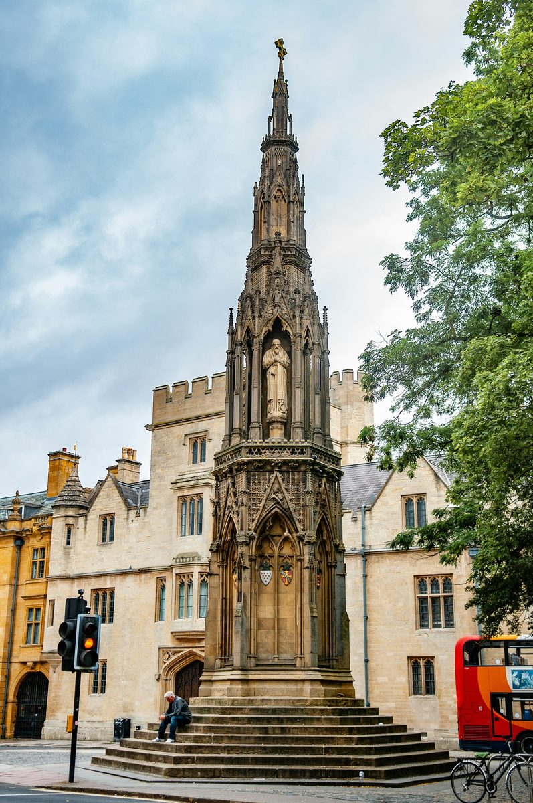

The Dreaming Spires
Nine stops from the Martyrs' Memorial to Christ Church Meadow. Through nine centuries of the oldest English-speaking university in the world.
From the place where three men were burned, through the oldest English-speaking university in the world, to the meadow beside the river. Nine centuries in nine stops.
Leave a quick review. It helps other travellers find us and means a lot.
♥ Thank you so much. We'll read it and add it to the site shortly.
You've seen what this tour is like. The next 6 stops go further. €4.99, yours to keep forever.
Unlock Full Tour - €4.99Payments powered by Lemon Squeezy & Stripe